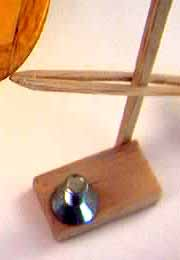

| Sometimes the simplest tools are the most useful. How many times have you struggled with a ruler, measuring a model to see if the dihedral was equal, or if the stab is crooked? Shown on the right is a little position indicator that I made in just a few minutes out of some hard balsa sticks a scrap of sheet and some super glue.
The arm is made of two sticks with the ends glued together. It slides up and down on the upright and is held in place by friction. Not seen is a second arm that is handy when rigging biplanes, or checking total throw of a control surface. The bolt is there as a weight, to keep the device from tipping over. Wouldn't want to damage a delicate structure, in this case the stabilizer of my Flying Aces Moth. There isn't too much else to say about it, except that it is one of the most used tools on my bench. If you build one, you might well agree. |
 |
Copyright 1998, Thayer Syme. All rights reserved